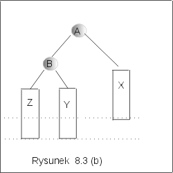

| « poprzedni punkt | nastêpny punkt » |
Operacje wstawiania i usuwania elementu z drzewa BST mog± zmieniæ strukturê drzewa, w taki sposób ¿e w³asno¶æ wywa¿enia nie bêdzie zachowana. Aby przywróciæ strukturê AVL, konieczne s± lokalne operacje na atrybutach wierzcho³ków, tzw. rotacje. W tym punkcie wyk³adu omówimy cztery typy rotacji: rotacjê w prawo i rotacjê w lewo, zwane pojedynczymi (lub prostymi) rotacjami, i rotacje podwójne w prawo i w lewo.
Dla wygody, drzewo binarne bêdziemy opisywaæ w sposób liniowy, jako trójkê <LD, r, PD>, gdzie r jest jego korzeniem, a LD i PD odpowiednio jego lewym i prawym poddrzewem.
Rotacja w prawo.
Rozwa¿my drzewo binarne D postaci <<X,A,Y>,B,Z>, o korzeniu B. Rotacja w prawo wzglêdem wierzcho³ka B polega na "obrocie" wierzcho³ków A, B wzd³u¿ zewnêtrznych krawêdzi grafu, jak zaznaczono na rysunku 8.2 (a), tak by otrzymaæ drzewo < X,A,<Y,B,Z>>. Korzeniem otrzymanego po rotacji drzewa jest wierzcho³ek A (por. rysunek 8.2(b). Zauwa¿my, ¿e zmiany s± lokalne. Nie zmieniamy ¿adnych etykiet, ani dowi±zañ wewn±trz poddrzew X, Y, Z. Co wiêcej, je¿eli h(X) = h(Y) = h(Z) = k, to wysoko¶æ drzewa te¿ zostaje zachowana. Rzeczywi¶cie, wysoko¶ci± drzewa przed i po rotacji jest k+2. Zatem, je¶li drzewo przed rotacj± by³o wywa¿one, pozostanie wywa¿one po rotacji. Je¶li drzewo przed rotacj± by³o drzewem BST, po rotacji pozostanie drzewem BST: etykiety poddrzewa Y, jako mniejsze od B i wiêksze od A (z za³o¿enia), trafi³y na prawo od A i na lewo od B.
Operacja rotacji w prawo mo¿e byæ zrealizowana za pomoc± procedury Rotacja_w_prawo z jednym parametrem w, który okre¶la wierzcho³ek wzglêdem którego zostanie wykonana rotacja.
Rotacja_w_prawo(w : node){
aux := w.left; w.left := aux.right;
aux.right:= w; w := aux;
}
Rotacja w lewo.
Rotacja w lewo jest operacj± symetryczn± do operacji rotacji w prawo
i polega na "obrocie" wierzcho³ków A, B, tak jak zaznaczono na rysunku
8.3 (a) wzglêdem zewnêtrznych krawêdzi grafu. Je¿eli dane drzewo jest
postaci <Z,B,<Y,A,X>>, to po wykonaniu rotacji w lewo
otrzymamy drzewo <<Z,B,Y>,A,X>. Wynik rotacji w lewo zosta³
przedstawiony na rysunku 8.3 (b). Podobnie jak poprzednio, rotacja w
lewo zachowuje w³asno¶æ bycia drzewem binarnych poszukiwañ. Je¶li h(X)
= h(Y) = h(Z) = k, to wysoko¶æ drzewa zarówno przed jak i po rotacji
wynosi k+2. Algorytm rotacji w lewo zosta³ zapisany jako procedura
Rotacja_w_lewo. Parametrem tej procedury jest wierzcho³ek w, wzglêdem
którego dokonujemy rotacji.
Rotacja_w_lewo(w : node){
aux := w.right; w.right := aux.left;
aux.left := w; w := aux;
}
Koszt wykonania obu rotacji prostych jest sta³y: wykonujemy tylko kilka instrukcji przypisania zmieniaj±cych niektóre referencje.
|  |
Podwójna rotacja w prawo.
Rotacja podwójna, jak sama nazwa wskazuje, jest nieco bardziej skomplikowana. Niech dane drzewo binarne D ma postaæ <<X,A,<Y,B,Z>>,C,U>. Rotacja podwójna wzglêdem wierzcho³ka C jest z³o¿eniem dwóch rotacji prostych: rotacji w lewo wzglêdem wierzcho³ka A oraz rotacji w prawo wzglêdem wierzcho³ka C. Po pierwszej rotacji otrzymujemy drzewo <<<X,A,Y>, B,Z>,C,U>, a po drugiej, drzewo <<X,A,Y>, B,<Z,C,U>>. Drzewo przed i po rotacji podwójnej w prawo zosta³o przedstawione na rysunkach 8.4(a), 8.4(b). Je¿eli h(U) = h(X)= k oraz h(Y)= h(Z)= k-1, to wysoko¶ci± drzewa przed rotacj± i drzewa po rotacji jest k+2. Je¿eli drzewo przed rotacj± by³o wywa¿one, to po rotacji bêdzie tak¿e drzewem wywa¿onym.
Uwaga. Zauwa¿my, ¿e po pierwszej prostej rotacji w lewo, ta w³asno¶æ dla drzewa D nie jest spe³niona.
Ponadto, w³asno¶æ bycia drzewem BST zostanie zachowana. Rzeczywi¶cie, etykiety wierzcho³ków A, B, C jak równie¿ wierzcho³ki wewn±trz poddrzew X, Y, Z, U, zachowuj± w³asno¶ci uporz±dkowania drzew binarnych poszukiwañ. Etykiety wierzcho³ków w poddrzewie Y s± mniejsze ni¿ etykieta w wierzcho³ku B, ale wiêksze ni¿ A (o ile D jest drzewem BST). Dowi±zuj±c poddrzewo Y jako prawego syna wierzcho³ka A, zachowujemy w³asno¶æ uporz±dkowania, mówi±c±, ¿e w prawym poddrzewie A, etykiety musz± byæ wiêksze od etykiety w wierzcho³ku A. Podobnie, etykiety w poddrzewie Z s± wiêksze od B i mniejsze ni¿ etykieta w wierzcho³ku C, jako ¿e przed rotacj± znajdowa³y siê na lewo od C. Mo¿emy wiêc dowi±zaæ Y w prawym poddrzewie B, jako lewy nastêpnik C. W³asno¶æ: wszystkie etykiety w lewym poddrzewie wierzcho³ka musz± byæ mniejsze od etykiety w tym wierzcho³ku, bêdzie zachowana.
Rotacjê podwójn± w prawo mo¿na zrealizowaæ tak jak to przedstawiono w procedurze Rotacja_w_lewo_prawo z jednym parametrem, wierzcho³kiem w, wzglêdem którego wykonywana jest rotacja.
Rotacja_w_lewo_prawo(w : node){
Rotacja_w_lewo(w.left);
Rotacja_w_prawo(w);
}
Podwójna rotacja w lewo.
Operacj± dualn± do rotacji podwójnej w prawo, jest rotacja podwójna w lewo. Niech drzewo binarne ma postaæ <U,C,<<Z,B,Y>,A,X>>, por. rysunek 8.5 (a). Wynik rotacji podwójnej w lewo, <<U,C,Z>,B,<Y,A,X>>, zosta³ przedstawiony na rysunku 8.5(b). Rotacja ta jest z³o¿eniem prostej rotacji w prawo wzglêdem wierzcho³ka A, oraz prostej rotacji w lewo wzglêdem wierzcho³ka C.
Rotacjê podwójn± w lewo mo¿na zrealizowaæ tak jak to przedstawiono w procedurze Rotacja_w_prawo_lewo. Jedynym parametrem tej procedury jest wierzcho³ek w, wzglêdem którego wykonywana jest rotacja.
Rotacja_w_prawo_lewo(w : node){
Rotacja_w_prawo(w.left);
Rotacja_w_lewo(w);
}
Koszt obu rotacji podwójnych jest sta³y, jako ¿e koszty rotacji prostych by³y sta³e.
Pytanie 2: Czy porz±dek inorder etykiet wierzcho³ków drzewa
BST jest zachowany przy rotacji w prawo?
| « poprzedni punkt | nastêpny punkt » |